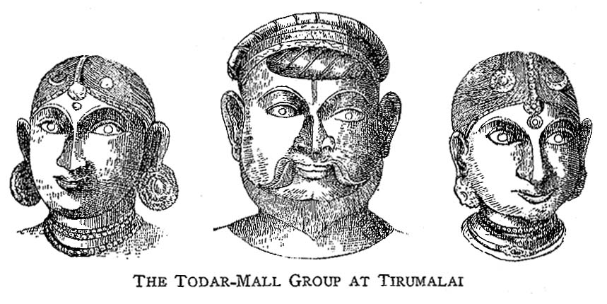
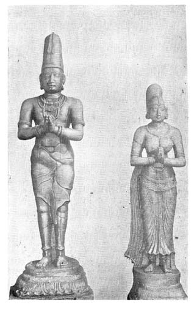
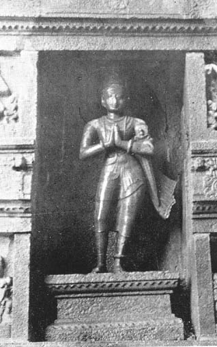

South Indian Portraits
By T. G. ARAVAMUTHAN
V
MODERN ART,
(Continued)
The Vishnu temples of Conjeevaram and Tirumalai have each a group of bronze statues, the central figure in each of which must have been Lala Todar-Mall. An annual festival in the Conjeevaram temple preserves an historical episode,-the southern expedition of Aurangazeb, about 1688 A.D., causing fright to the temple authorities of Conjeevaram, their removing the idol to Udaiyarpalaiyam,1 some 200 miles to the south, where the idol was placed safe under the protection of the local chief, his refusal on the subsidence of
the panic to allow the removal of the idol back to Conjeevaram, and its rescue from his hands by Lala Todar-Mall who, at the instance of his preceptor, Attan-Jiyar, advanced against him in 1710 A. D. with a strong contingent, terrorised him into compliance and brought the idol safely back to Conjeevaram. This Todar-Mall was the general of the Nawab of the Carnatic, Saadat-Ullah-Khan. The three metal statues in the Conjeevaram temple [Fig. 53] are traditionally known as those of Todar-Mall and his father and mother, but they bear no labels.2 At Tirumalai, too, this general seems to have been able to secure a footing, though we do not now know how. Of the four statues of metal which seem to have been placed originally in the temple at Tirumalai, one has now disappeared and two are quite badly mutilated. The one that has disappeared is said to be Todar-Mall's : his name is understood to have been engraved on the shoulder. The only statue in a state of good preserva tion is that of Khema-Ram who is said to be the father of Todar-Mall. On the other statues of this group are engraved respectively the names Mata Mohana De and Pita Bi [Fig. 54].3

Tradition has a story to tell, as piquant as it is tragic, of how Mangammal, queen of the Nayaka line of Madura (1689-1706 A. D.), had a guilty passion in the days of her widowhood for a young man who was her minister, how impelled as much by her own love of power as by the evil counsel of her paramour she refused to hand over the reigns of sovereignty to Vijayaranga-Chokkanatha, her grandson, when he came of age, and how a justly enraged public pulled her from the throne and pushed her into a dungeon and starved her to death, subjecting her to a variant of the curse to which Tantalus had been condemned,-finely flavoured food being placed within reach of sight and smell but beyond the reach of the hand. In confirmation of the story, tradition points to a picture [Fig. 55] painted in the ceiling of a corridor running around the 'Golden Lily Tank' of the temple of Sundara at Madura, in which on one side of a representation of the 'Wedding of Sundara' stands queen Mangammal, attended by her grandson, Vijayaranga Chokkanatha, while on the other stands a person who looks a high dignitary of state. Tradition lays malicious stress on the queen appearing bedecked in jewels and finery utterly inappropriate to her unfortunate condition of widowhood, calls attention to the youth and the comeliness of the minister and adds that a piece of sculpture in the corridor [Fig. 56] is a portrait of the young minister who had made the queen the slave of his passion and the tool of his ambition. The features of the statue answer indeed to those of the minister's portrait in colours in the ceiling, but no further circumstances are known that vouch for the accuracy of the tale. A label beside the painted portrait of the minister calls him (Dalavay) Ramappayya, but we have now no knowledge of a person of that name having been Minakshi's minister; we know only that Narasappayya and Achchayya were her ministers, the latter being the person in office at the time when the queen's affair of the heart could have culminated in the tragic denouement of which tradition speaks with high relish.4 The label might have undergone alteration, -a painter might, in repainting the scene, have ignorantly amended the label by substituting Ramappayya's name, famous in the history of the Madura line, for that of Achchayya, or the minister might have been a Ramappayya later and less renowned than his famous namesake, or the story might be altogether false, or again, tradition got the Correct facts but took hold of the wrong evidence and assigned a romantic reason for the minister being in attendance on the queen. No practice is better established than that of a Hindu sovereign being attended by his minister when engaged in worship and Mangammal's minister was merely discharging the duties of his office in accompanying her on an occasion when she attended the festival of 'Sundara's Wedding.'
In the north-west corner of the second circuit of the Vishnu temple at Srirangam there stand two pairs of statues. The first pair represents Vijayaranga-Chokkanatha Nayaka of the Madura line (1704-31 A. D.) and his queen, and the second pair represents a brother of Vijayaranga-Chokkanatha and the wife of that brother. They hold their hands out as if they were plying fly-whisks before the idols of the deities of the temple. The statues are made of a core of sandal-wood which is coated over with ivory and so excellent is the workmanship that it is difficult to discern the joints.
'In the Sthanunathaswamin temple at Suchindram5 there are two stone statues of a king and a prince [Fig. 57]. The tradition connected with them is that they represent Ramavarman and his nephew. It is not unlikely that one of them, the bigger of the two, represents Bala Ramavarman, who . . was in the place, when the Cochin Raja vowed before the god that he and his successors would not undertake any wars against the Travancore king and his successors. He holds in the right hand an uplifted sword while the left holds the handle of its scabbard whose point is directed downwards. The statue to the proper left of the above is in most respects similar to it. The head-dress is different, the right leg is bereft of vira-kalalai and the hands are held in worshipping attitude (anjali-hasta). It is not improbable that it represents the crown prince.'6 Both uncle and nephew bore the name Bala-Rama-varman, the uncle being the reigning king and the nephew, according to Malabar custom, being the Crown Prince. The uncle was on the throne in 1761 A.D.7 The two statues cannot be considered very fine pieces of work, if we may judge merely from the pose, but the marked individuality of each piece suggests that it is not unlikely that both are real portraits.
Perhaps at the close of the 18th century one Vijayarayar repaired the temple at Senganmal8 and had a relief in his own likeness carved on one of its walls.9
Two statues exist of Sarabhoji (1798-1833 A. D.), the Maharatta king of Tanjore,-one of marble [Fig. 58] in the durbar hall of the Tanjore palace, and another of bronze, [Fig. 59] in the Chakrapani temple of Kumbhakonam. The former was executed by the famous English portrait-sculptor, Chantrey, perhaps from portraits given to him by Sarabhoji's English friends. This statue presents the king in the normal attitude of adoration,- hands joined in anjali,- though it must have been intended to be set up in the 'Audience Hall.' In the other statue he appears leaner and lankier and his robe fits his person closely. We do not know who the sculptor was who fashioned this bronze, but the technique is purely European.
We have also a relievo-panel of Sarabhoji paying a visit to Schwartz,-the famous German missionary who was his friend, tutor, champion and even philosopher,-when Schwartz lay dying [Fig. 60]. This panel, executed by Flaxman, is one of the treasures of the principal Christian church at Tanjore.
A rude sculptural representation of Lionel Place, Collector of Chingleput, in the very early years of the last century, was placed in the Vishnu temple of Madhurantakam10 in gratitude for his having saved the town from being washed a way by the waters of the huge tank on its confines on an occasion when an over-bounteous monsoon had filled the tank with more water than its banks could endure.
A Collector of the Salem district, Davis by name, having made a contribution towards the execution of a pillar' in a mandapa of the Siva temple at Tiruchengodu,11 in 1823 A. D., 'a figure with hat and a walking stick is carved on one side of the pillar.'12
These relievos and statues do not by any means exhaust the sculptures in the south of India which fall into the category of portraits, but they do form a representative collection exhibiting adequately the varieties of material, mode and motif. Examples could be multiplied indefinitely. At Madura itself in its numerous shrines and their appendages we find statues of various persons whose identity is now unascertainable. The Vishnu temple at Mannargudi,13. for instance, contains some twenty statues, in every part of the temple from the outer mandapa to the halls immediately before the sanctum sanctorum, in relief or in the round, free or engaged to a pillar, most of them being about a yard or less in height, but not one is of any merit or significance; the only group of any interest stands in the hall just before the principal shrine and is shown special honours at festivals. We have confined ourselves to instances which are worthy of note for containing a date, or for illustrating a pose or a motif or a type of sculpture or a style of technique.
VI
SAINTS AND PRECEPTORS
Mention, but no more than mention, has to b made of another class of sculptures of which specimen fill practically every south Indian temple to Vishnu or Siva. In the Tamil copntry every Siva temple contains a set sixty-three images representing the sixty-three Nayanmar or Saints of Tamil Saivism and every Vishnu temple contains a group of sculptures of the Alvars or the Saint and the Acharyas or the Preceptors of Tamil Vaishnavisn. These images are certainly considered portraits by the pious but a study of any two sets of images makes it palpable that though portraiture might have been intended it was not achieved, except occasionally in the case of the image of so eminent a personality as Ramanuja. A posture or a symbol was originally associated with each saint and every generation of sculptors has followed the convention without attempting to give to each figure an individual expression. The Alvars, the Acharyas and the Nayanmar are not portrayed in the sculptures with any greater fidelity to historic truth than the Buddha or the Boddhisattvas are represented in the numberless paintings or carvings of Buddhist art, of the Tirthankaras in Jain art, of the Lamas by Tibetan artists, or of the Madonna of the christians.
Certain sculptures of Vaishnava Acharyas are attest by tradition and by chronicles to be real portraits a mention may therefore be made of them. The chronic further give very interesting accounts of how images of . outstanding religious preceptors came to be set up.
Ramanuja, the greatest of the preceptors of Vaishnavi (1018-1138 A.D.), allowed images of himself to be installed in his own life-time. One of the hagiologists says that Ramanuja having renovated a great Vishnu temple Tirunarayanapuram (Melkote)14 during a long sojourn Mysore was about to return to Srirangam when his disciples represented to him in moving terms how greatly they would feel the separation. Thereupon, Ramanuja had an image of himself created15 and he established in it his powers (sakti) and handed it over to his disciples for their worship. According to the same hagiologist when Ramanuja, years later, had become so old as to make his following apprehend that he might not survive long, the disciples prayed him that for their benefit and for the benefit of posterity he would allow an image of him to be set up at Sriperumbudur, his birth-place. On his granting permission, a sculptor cast an image and brought it before him and he thereupon approved of it and embraced it hard so that it might glow with every power (sakti) of his. It was then taken to Sriperumbudur and installed there, along with a mula-vigraha, on a day appointed by Ramanuja himself. The chronicle adds that Ramanuja, having one day found himself suddenly so weak indeed as to feel that his end was quite at hand, asked what day of the year it was and in reply was told that it was the very day he had appointed for the consecration of the images at Sriperumbudur, some three hundred miles away.16 The hagiologist evidently intended to suggest that the consecration of the images was the cause of the weakness felt by Ramanuja. It is said also that within a few days of his death an image of him was set up at Srirangam.17
Another hagiologist18 confirms the account of Ramanuja permitting an image of himself to be set up at Melkote but gives a different version of his allowing images to be set up when he was approaching the fag-end of his life. According to this hagiologist, Ramanuja having been persuaded that he would be helping his doctrine to spread and flourish if he permitted images of himself to be set up, three images, evidently of metal, were shortly after brought before him and he thereupon embraced them and directed them to be placed severally at Srirapgam, Sriperumbudur and Tirunarayanapuram (Melkote), and he further permitted his image to be installed in every place where his followers were found. Accordingly, on his death, three images were installed in the three places as directed by him and other images were set up in other Vaishnava centres.19
|
 |
 |
|
Venkata I and his Queen |
Krishnadeva-raya |
Tradition says that the shrine of Ramanuja at Srirangam has been reared on the spot where he was interred, that the mula-vigraha is placed right above his remains and that this vigraha is fashioned out of clay, red-earth and the ochre-coloured garment worn by him in his last days; even now, the cloth is clearly discernible.
A figure of brick and mortar in the third floor of the Vishnu temple at Tirukkoshtiyur20 is said to, be an image of this Acharya. He had his spiritual initiation at this place from his guru, but feeling that the injunction to keep the teaching secret and to impart it to only the elect was wholly unjustifiable and would prevent the gospel reaching the sinful among men, he chose deliberately to break the injunction, mounted the temple and, placing himself at a coign of vantage, proclaimed the sacred teaching, to all who would hearken. It is at this spot, marking one of the most significant events in his career, that, by popular account, this image stands.21 Even if this figure had been placed there in Ramanuja's life-time itself, we may take it that it could not long have retained its character as a portrait, for the brick- layer must have retouched the image whenever brick and mortar mouldered away.
A statue of another great Vaishnava preceptor, Vedanta Desika, is said to have been made in very interesting circumstances. He bore the title sarva-tantra-sva-tantra and justified it by the versatility of his attainments. A short while before his death he was challenged by a sculptor to maintain that title by making an image of himself. That night Desika was instructed in a dream by God to fashion the image in a sitting attitude, the right hand formed in the jnana-mudra and the left holding a book. In the morning Desika sent for the presumptuous sculptor and in his presence modelled the image in wax and then made from it a metal cast. The sculptor was astonished at the remarkable success with which Desika reproduced his own features and figure. His surprise was all the greater when, on his attempting to scrape off with his chisel a little of the metal which he fancied was a trifle superfluous on the cheek, the statue began bleeding at the place where the chisel had grazed it; the sculptor was quite convinced that Desika had performed the difficult talk of judging his own features with an accuracy which professed sculptors could not pretend to. Desika had the statue covered up and stowed away for the reason that it represented him all too faithfully in every limb and in every part. Not content with this display of his ability as a practical sculptor Desika furnished further proof of his remarkable attainments in the art by producing a treatise on sculpture. An image of him was installed in the temple of Srirangam immediately after his death. Some time later, it is said, the deity of Srirangam directed that statues of none of the preceptors who came after Desika should be set up in that temple.22
Manavala-maha-muni, a third great Vaishnava preceptor permitted statues of himself to be set up in his last days; he handed over to his disciples a copper vessel he was accustomed to use and they utilized it for making two statues of him.23
In one of the other Vaishnava chronicles24 we have a story of how a Pandya king, Jatavarman Sundara-Pandya I (c. 1261 A. D.) enlarged greatly the temple at Srirangam and made gifts of jewels to the god, spending 36 lakhs of pon (gold pieces), and how the temple authorities refused to grant his request that he might set up a statue of himself in the temple. Why this request met with refusal is more than we can now pretend to explain, especially as the chronicle is silent on that head.
This chronicle proceeds to state that the famous Vaishnava saint, Tiru-Mangai-Alvar, a personality of much earlier times, built a shrine in the temple of Srirangam and had a mula-bhera and an utsava-vigraha of himself installed.
The same chronicle says elsewhere that in 1512 A. D. likenesses were carved and set up, and inscriptions incised, in memory of two jiyars and some ekangis who, some twenty years earlier, as a protest against the exactions and persecutions of a chieftain, Koneri-rayan, had committed suicide by throwing themselves down from the gopura of the temple.
In one of the minor shrines of the Arulala-Perumal temple at Conjeeveram we have an image of Lakshmi-Kumara-Tatacharya, the great guru of Venkata I of the Vijayanagara line, but we have no warrant for believing that it is a likeness or was set up either in his own life-time or shortly after. To one who is curious to know how he deserves a place in this temple the answer is plainly written in the numerous inscriptions on its walls which make mention of his attainments and achievements and the numerous ways in which he was of service to the temple. 25
Opposite the shrine of the goddess in the Vishnu (Sarangapani) temple at Kumbhakonam is a niche in which is placed a figure which is said to represent a certain Lakshmi-Kumara-Tatacharya. We do not know for certain if this person is identical with the guru mentioned above, but it is not improbable, for the former calls himself 'Lakshmi-Kumara-Tatacharya of Conjeevaram and Kumbhakonam.'26 This tiny shrine is under the control of some persons who are evidently among his descendants and naivedya is offered to the image every day by them. 27
VII
MATERIAL, METHOD AND MOTIF
Most of the portrait sculptures in south India are found in temples or stupas or in places closely associated with them,- such as corridors or Mandapas. We cannot indeed point to more than two instances of sculptures of this class being found in a place not a stupa or a temple. One of them is the slab (found along the road leading to Upper Ahobilam) on which Bhira-Rauthu is figured in a simple line-sketch: it must have been set up on the road almost as a mile-stone marking a stage in a devotee's pilgrimage in the flesh and in the spirit to the shrine up the hill. The second is the group in the Nanaghat cave which, though perhaps the scene of Vedic sacrifices, was yet neither temple nor part of one.
That at the present day these sculptures are found almost exclusively in temples must be due to the circumstance that temples are the only ancient monuments which have survived to us. How varied might have been the types of these sculptures had other classes of ancient buildings survived is established by the discovery of the statue of Kanishka and its devakula or statue-house and by the discovery of portraits in the remains of the stupa of Amaravati. Even the debris which covered the ruins at Mathura served a good purpose,- that of preserving for the archaeologist and for posterity the vestiges of a structure the like of which have utterly perished elsewhere through lack of even such ignoble protection. The devagadhs of Rajaputana seem to have caught up in mediaeval times the ancient tradition of which the only surviving evidence is the ruined Kushan devakula. They are not temples but are, if the term may be used loosely, mausoleums. The disappearance of other varieties of 'statue-houses' and our ignorance of those types of portrait-sculpture which might have been appropriate to such varieties make it impossible for us to be positive on any aspect of this branch of art.
Some of these sculptures are placed in the gateways of temples, some are carved in relief on the outer walls of shrines, some on either side of the entrance into them and two might have been placed in the sanctuary itself. We have to infer that the stone sculpture of Mahendravarman in the Trichinopoly cave-temple was installed in the sanctuary and it seems probable that the group of Rajaraja and his queen Loka-maha-devi were placed in the sanctuary of the temple at Tanjore but we cannot cite further instances. The more usual practice is to place them in niches adjacent to the shrines or in embrasures which sometimes look miniature shrines.
The statues are made in almost every variety of material. The stone statues are generally carved out of the stones available in the locality. Stone is the commonest material but brick and mortar are not uncommon. Ramanuja's effigy over his sepulchre seems to be made of clay, red-earth and cloth. We have a set of statues carved in sandal-wood and veneered over with ivory. Those of metal are generally cast in what is technically called pancha-loham (an alloy of five metals), but we know also of images of bronze and copper.
Marble and other varieties of stone capable of receiving a high degree of polish do not seem to have been at all made use of. Nor do the sculptors seem to have attempted to impart to the sculptures even that little polish which the varieties of stone are capable of taking. The ancient practice of laying a thin coat of lime on the surface of the sculptured stone does not explain why the sculptures were not polished, for the practice was not generally observed even when the sculptures were set up in sheltered places and could not have been observed where the placed were in the open as in the mandapas and the outer walls of temples or were carved on the faces of rocks exposed to sun and rain.
The Simhavishnu and Mahendravarman relievos at Mahabalipuram show traces of a thin coat of plaster having been applied over the carving on stone; perhaps they were painted over suitably. The statues of the Madura Nayakas are painted to show the complexion of the subjects and to display the magnificence of the dress and the splendour of the ornaments, but the painting is now done so crudely that the statues are rendered despicable. The plastering and painting of stone images is an ancient Indian practice which, however, in south India is still practised only in the portrait gallery at Madura.
The stone sculptures we now have are of various degrees of fullness, and finish. The line-engraving of Bhira-Rauthu, the Pallava relievos at Mahabalipuram which are generally of life-size, the small and almost insignificant figures jutting out of pillars in the mukha-mandapas of Mysore temples, the crude piece of stone which does duty for Mr. Place at Madhurantakam but might almost be a palaeolith, the statues fully in the round such as the free sitting statue of the anonymous Chola who chose a contemplative attitude, perhaps in relaxation h from the cares of sovereignty, the quarter-size statue of Krishna-raya at Chidambaram and the greater than life-size figures of a devotee at Amara vati or of the N ayakas in the Pudu-Madapam at Maduura,- these are enough to give us an idea of the extraordinary variation we have in size, in quality and in technique. The sculptor who at Amaravati carved the devotee's statue to a scale greater-than nature's realised that beside, or in, a stupa a statue of the average human height would stand dwarfed.
While the stone-portraits are of all degrees of fullness, proportion and finish, the metallic ones are generally in the round and are cast at least to a fourth of the human height and are almost always of excellent quality. The very earliest portrait statues of metal we have knowledge of must be attributed to the days of Rajaraja I. The statues of that king and of his wife and of Parantaka II and of his queen and of the priest who then officiated in that temple, all which were placed in the great temple of Tanjore by the end of the first-third of the 11th century A. D., must have been of excellent workmanship, if we may judge from the quality of the icons set lip in that temple by Rajaraja himself. The bronze of Sola-ma-devi at Kalahasti is of high quality and the bronzes of the Chola captain, Kettan Adittan, and his sister, installed in the same temple about 1120 A.D., are of equal excellence. The freedom of pose and the vigour of execution which they exhibit furnish proof of the confidence with which the metal workers of those days undertook portraits in bronze. It is superfluous to recount the merits of each of the other portrait-bronzes we have described. The group of Krishna-Raya at Tirumalai is the only known example of repousse-work. Generally executed in half the human size and, sometimes, as in the case of the Kempe-Gauda group at Sivaganga or the Todar-Mall group at Conjeevaram, approaching the full human figure in proportions, the statues in metal are of distinguished appearance and of almost uniform quality. None of them could be pronounced insignificant, though we may have to except the pseudo-Rajaraja and the Seringapatam bronze of Kanthirava, both of which are artistically contemptible. No higher testimony to the artistic genius of the south Indian craftsman could be found than the fact that among a score of metallic statues belonging to some eight centuries not more than two could be pronounced to have fallen short of excellence.
Many of the statues, whether of stone or metal, are individual figures but some are only individuals in a group. Usually, the group is one of a husband and his wife, but, we know of a group of brother and sister,28 a group of three brothers, 29 two groups of father and son,30 a group of a king and the heir-apparent, who was not the king's son but nephew31 and a group of a nobleman, his father, mother and wife.32 We have even a group of a man and a woman who are not known to be in anywise connected with each other except perhaps as joint builders of a part of a temple (one of the relievos at Tiruvaduturai). We have groups of kings or chiefs of a dynasty as at Madura, Ramesvaram, Tinnevelly and Srirangam, and a group of chiefs and their ministers at Ramesvaram, just as in north India we find groups of a king and his ministers, like theVana-raja group at Unhilpur and that of a nobleman and his divan at Mount Abu. Occasionally, as in the case of one or two of the Nayakas of Madura, the group includes perhaps a son or even a daughter, and in the case of Tirumala Nayaka, we have in a frieze on the pedestal, an appreciable part of the population of his harem.
Where statues of a number of kings of one dynasty are set up together they are arranged in order of succession.
It is not uncommon for a number of such groups to be set up together so as to form a grand group. The group of Simhavishnu and of his queens stands opposite the group of Mahendravarman and his queens, and the two groups, together with a few other groups, form one major group of striking appearance. Similar major groups are the collections of Vijayanagara kings at , Tirumalai and of the Nayakas at Srirangam and at Madura. The full-length statues in the shrines of the Ramesvaram temple and the corridors of the Tinnevelly temple and the grand group of the Nayakas at Madura are of great importance to the student of sculpture, for they show how portraiture can be made an integral feature of architecture; these statues and groups in spite of their individual grandeur sink into subdued magnificence in their setting as parts of huge pillars in mandapas of generous proportions. The sculptor who would design statues and sculptural groups and the architect who would dispose the groups to effective architectural purpose may each learn a good portion of his art from a close study of the galleries of Madura, Ramesvaram, Tinnevelly, and Srirangam. Equally instructive would the study be to the sculptor who would carve single or detached statues, for the sculptors did not consider the statues as mere addenda to, or excrescences upon, architectural pillars, but looked at them as individual œuvres d'art and bestowed on them all the skill they were capable of.
Most of these figures are in the standing attitude and only three, Simhavishnu, Gandar-Aditya and the anonymous king at Nandi are shown seated. Even among the north Indian statues mentioned already, only one of the Kushans and one of the Saisunagas and a few of the Nepalese kings are represented in the sitting posture. Many are the sculptures carved on the stony floors of temples showing a worshipper lying prone, with his head turned towards the deity and his hands stretched above his head and joined in anjali, just as if he were prostrating himself in worship. These figures furnish only the rear-view of the devotees and are valueless for a study of portraiture. Equestrian figures, such as that of Arya-natha, are very rare, and might have been set up to commemorate warriors. We know of only a few examples, all in Mysore, of a person being shown leaning on a staff; probably these represent members of a particular group or sect.
The most common mode of disposing the hands of the statues, the joining them in anjali or salutation, is certainly due to the statues being generally located in temples, but we have a unique example, at Tanjore, of a king, Sarabhoji, standing with hands joined in salutation, not in a temple, but in his Hall of Audience. The devotee's statue at "Amaravati holds some lotus-buds in its hands which are joined in worship and the bronze of Sola-ma-devi holds a flower between its fingers. Between the folded palms of the
bronze of the chieftain-devotee found at Gandarkottai we find a rosary of a few beads.
In the Pallava portrait-relievos the principal figures generally point with the right hand towards the sanctuary and they occasionally lead their companions with the left. The builder of a mandapa in the Tiruvisalur temple stretches forth his hands in silent solicitation of boons. The statues of the Vijayaranga-Chokkanatha group at Srirangam stand as if they were plying the fly-whisk in the presence of the deity. While the mediaeval king at Kumbhakonam has devotion enough to keep his sword sheathed, the king at Suchindram, mindful of his being the guardian of the god and his temple, has drawn his sword from the scabbard and holds it aloft in warning to the evil-minded.
Three statues demand attention for the exceptional treatment of the hands. Simha vishnu's right hand is in the chin-mudra and his queens stand listening to him. Simha-vishnua's seated posture, the serenity of his countenance, the chin-mudra and the listening attitude of his queens seem to suggest that he is expounding some of the eternal verities to his queens and that they are listening to him in rapt attention. The statue at Nandi which according to tradition represents a Chola king-, shows him seated and with the chin-mudra The bronze statue of Vishnuvardhana gives him also the same mudra. Royal builders of temples not being normally installed in the seated form in the temples which they built and it being rarer still for them to affect the chin-mudra we may indulge a suspicion that there were circumstances in the lives of these kings justifying both the seated attitude and the mudra, but we are not able now to discover what those circumstances might have been,-not even in the case of Vishnuvardhana. The appropriateness of these mudras for these figures cannot be now pronounced upon, no means being available to us of ascertaining if or how the subjects of the portraits deserved them.
Men and women of every grade of society are subjects of portraiture. Kings are common and ministers not rare. The Chola captain comes from the army and Lakshmi-Dasi comes from the ranks of courtezans. Shrines are raised over images of religious preceptors like Ramanuja and niches are found for a temple musician playing a vina and for the reciter of a ' Sacred Decad.'
The catholicism of which Brahmanism is capable is illustrated by the figures of two Europeans,- Place and Davis,- being allowed to be set up in temples.
The sculptures are often given labels containing the names of the persons represented, the earliest known instances being that of Kanishka in north India (if we omit the other Kushans and Saisunagas), those of the Nanaghat group in the Dekkhan, and those of Simhavishnu and Mahendravarman at Mahabalipuram in south India. The labels were engraved on the pedestals, as in many of the bronzes, or on the upper curves of the niches, as in the Mahabalipuram cave-temple, or on the drapery of the figure as in the Kanishka statue, or even on the shoulder as in the Vijayanagara and Todar-Mall statues at Tirumalai. Sometimes, an inscription runs beside the sculptures setting forth the circumstances in which, and the persons for whom, they were executed. But, often, the figures were left without any indications of either identity or purpose.
None of the figures bears any indication of whose handiwork it is; the sculptors have studiously refrained from signing them. Tradition says of Ramanuja and Vedanta Desika, olbiquely in the case of the former and directly in that of the latter, that they fashioned their own images, but we have no means of testing the reliability of the tradition.
VIII
THE CRAVING FOR PORTRAITURE
How are we to account for the penchant which the south Indian has undoubtedly had for centuries for carving and installing sculptures which he intended to be statues?
Some statues were set up by the subjects themselves, but anyone could, it seems, have statues set up for himself or for any 'one else. A Chola queen had an image of her husband carved and another had images of her parents set up. A Satakarni queen had a group fashioned to represent herself, her husband, father-in-law, father and sons. Rajendra installed a bronze of his step-mother and another of his priest. Tirumala Nayaka set up a gallery of likenesses of his ancestors and of a prime-minister of his dynasty. A sister presented a bronze of her brother and, evidently, followed it up with one of herself. A feudatory set up statues both of his father-in-law and his over-lord, the Vijayanagara king. An officer set up bronzes of himself and a colleague. Disciples consecreted statues to their preceptors. Nor were restrictions placed on images of a person being set up in a number of places.
Some of the figures, such as those of Gandar-Aditya, the Chola captain, and all the Madura Nayakas, except Tirumala Nayaka, were carved and set up after the death of the persons represented. If tradition speaks true, Tirumala set up statues to three generations of his predecessors on the throne and the citizens of Srirangam set up likenesses of persons who had died some twenty years before. But many of the statues were set up in the life-time of the subject himself, as is evident from the history of the Satakami relievos and as is expressly stated in respect of the image of Mahendravarman at Trichinopoly and the bronzes which the devotees of Annur, Tirukkannapuram and Kalahasti gave a way along with their gifts for perpetual lamps. Almost all the hagiologists who speak of images being installed in the likenesses of the great Vaishnava Acharyas say that they were set up while they were yet alive. But, one of the chronicles says that Ramanuja felt very weak at the time when his image was being consecrated at his birth-place, ptrhaps because his' powers' were being transplanted from his body into the image. Another hagiologist records that though Vedanta-Desika cast his own image, yet he had it stowed away because of its supreme perfection as a likeness. These two accounts suggest that it was considered hazardous to set up a statue in the subject's life-time, and especially so if it was a good likeness, but we have irrefragible proof of a practice, dating at least from the times of the Satakarni relievos, of living persons being represented in portraits.
Statues accumulate under one roof through a variety of causes. Numerous devotees contribute towards the construction of edifices such as the architectural appendages of the Amaravati stupa and each of them who can afford it puts in a figure of himself. Almost every member of the Pallava dynasty in the seventh century thinks it his duty to embellish Mahabalipuram and leaves behind him a mark of his activity by including his own likeness among the sculptures which he gets carved out of the rocks scattered pell-mell on the surf-beaten shore. Perhaps the builder of a temple, or it may be the builder of an extension, has a relievo or other sculpture carved in it to represent himself; another devotee builds a minor shrine or repairs the old temple and installs a figure of himself; a third devotee seeks to distinguish himself over others by setting up a full-fledged statue in his own image, perhaps getting permission for it by valuable gifts to the temple, and he is in turn emulated by others: thus accumulates a series of sculptures representing unrelated individuals. The temple becomes popular at one time or another in its history and worshippers who are anxious to leave permanent memorials of their devotion set up statues of themselves in the attitude of worship. One member of a family- it is a dynasty of potentates in the Tirumalai temple,- starts paying his devotions to the deity of that temple and his descendants and other members of his family follow in his wake treating the god of the temple as their kula devata with the result that every important member of the family finds for' himself a niche, however small, in that temple. Or a king, such as a Nayaka of Madura, becomes a passionate devotee of the deity of a temple, often the principal one in his capital, as in the case of Madura, and makes lavish gifts of jewellery to the image and extensive grants of land to the temple and starts making architectural additions on a grand scale. When the work is complete, he sets up at least a statue of himself and, if more ambitious, he installs statues of his predecessors as well. All of them are mindful of the transitoriness of physical life and the shortness of the period in which they could in their proper person keep worshipping the deity enshrined in a temple and being anxious to prolong their devotion beyond even this life, at least so long as temple and carved-stone or cast-metal, would endure, they install statues of themselves in the temple with their hands joined in salutation. They have gone their way and the world has not known them for over a thousand years, and yet their statues now stand in the temples rendering salutations which in the thousand years have lost no whit in sincerity. Some devotees have a fascination for burning perpetual lamps in temples for their merit and they fancy a partiality for having them- selves set up in such form that, though turned into stone or metal, they could yet be seen engaged in perpetual service to the deity. So, instead of having the hands of the statue joined in salutation, they have a lamp put into them, so that the figure, generally of metal, might stand for all time holding a burning lamp before the deity for the illumination of the shrine. A similar motive is exemplified in the Vijayaranga-Chokkanatha group which stands with hands stretched out wielding fly-whisks.
Every variety of motive seems to have incited men to set up statues. The builder of a stupa or a temple is anxious to commemorate his having accomplished the pious task he had set himself and carves a figure of himself in it. A king desires to enhance the attractions of the chief shrine of his capital by architectural additions to it and takes the opportunity of carving out immortality for himself in his own image in stone. A king protects with uplifted sword the sacred precincts of the Suchindram temple and another, king follows as an escort in the train of the image of another deity of a temple which he himself had built. A general, Todar-Mall, brings the deity of Conjeevaram back from exile and either commemorates the event or it is commemorated, by the installation of statues of him and his family in the temple. Queen Sembiayan-ma-devi builds a temple in the name of her husband, king Gandar-Aditya, and she carves in it a relief of him. Princess Kundavai has such respect for her parents that she installs images of them in a temple which her brother built. Rajaraja himself seems to have sanctioned the inclusion of a likeness of a priest among the images set up in that temple. The memory of the humble but devout services of the chanters of hymns and the musicians attached to a temple is also perpetuated. Even kings arid queens desire to stand for ever before the deity, performing services such as those of waving fly-whisks and they take pride in representing themselves as engaged in such services. One devotee portrays himself asking for boons. Other devotees found endowments for twilight lamps and place statues of themselves in the temple, perhaps in the spirit in which Hemadri enjoins that a donor should accompany his gifts with his own image. Disconsolate at the death of her brother, a Chola Captain, and anxious to secure his salvation, a lady places a bronze likeness of him in a temple, and later, she places a likeness of herself in the temple in the evident hope that the Lord will be merciful to her who stands suing for ever for His grace. A tower is erected on the spot where a certain person planted a spear and some persons are figured in it holding spears. Figures of religious men, jiyars and ekangis, who immolated themselves by falling from a temple gopura in protest against the tyranny of a chief are, some twenty-five years later, carved in a stone and set up in the temple by grateful citizens. Religious fervour blends with everyone of these motives and every figure, not excluding those which do not join the hands in salutation, is eloquently expressive of deep and strong devotion.
The predominance of this element of devotion explains why many of the portraits in stone are executed very crudely. The excellence of even the early sculptures such as those at Amaravati or Mahabalipuram precludes the suspicion that the crudeness might be due to want of sculptural skill. The prominence sought to be given to the Satakarni statue in its setting in the stupa of Amaravati and the grandeur of groups such as the one at Madura make it improbable that temple-builders had no craving to put their devotion into arresting shape. The evidences we have of the wealth of the Satkarnis, the Pallavas and the Nayakas, for instance, must warn us against assuming that the lack of finish was due to the necessity for observing parsimony. Knowing as we do how lavish Krishna-raya was, we cannot pretend that the comparative crudity of his statue at Chidambaram must have been due to reasons of economy. The crude portraits are often found in temples of liberal dimensions and of excellent workmanship. The explanation therefore seems to lie in the circumstance that many, if not most of the temple-builders, while desirous of putting in effigies of themselves as devotees, were not so wanting in the humility of true devotion as to raise costly and grandiose monuments to themselves. It was not the pride of having built the temple but the zeal for keeping for ever in the presence of the deity of the temple in an unceasing salutation or engaged in such interminable service to the deity as the holding of a light or the wielding of a fly-whisk that prompted the builder to install his own effigy in the temple. For this purpose it was immaterial whether the figure was artistically perfect or was merely carved into a rough resemblance to the human shape.
1. Udaiyarpalaiyam Tq., Trichinopoly Dt.
2. MER. 1920: 121-3: 64-5. 1921: 4 : 9. In MER. 1924: 4: 9, however the statues are said to be those of Todar-Mall and his two wives, but again, on p. 84, they are said to be statues of Todar-Mall, his father and mother. See also Madras Law journal, vol. 23, p. 144.
3. See MER. 1913: 5: 9 and MysAS. AR. 1920: 17: 34. The notes furnished by the Madras Epigraphists in their reports show how perfunctorily they studied the statues at both places. The inscription on the shoulder of the statue of Pita Bibi adds that she was the wife of Todar-Mall.
4. Satyanathan, History of the Nayakas of Madura, 124-5, 220-1, 237.
5 Travancore State.
6 TrAS. iv. 112-3.
7 There is a suspicion if the statues do not represent earlier members of the Travancore royal line, the bigger statue being considered that of king Ramavarman who ruled about 1700-1725 A. D.
8 Chingleput Tq. and Dt.
9 MER. 1916: 224 of 1916.
10 Madhurantakam Tq., Chingleput Dt.
11 TiruchengOdu Tq.. Salem Dt.
12 ASI.S.AR. 1918: 16.
13 Mannargudi Tq. Tanjore Dt.
14. Mysore Dt., Mysore State.
15 The passage may also mean that he created the image himself.
16 Pinbu-Alagiya-Perumal-Jiyar, Guru-parampara-prabha'Vam (6000-padi).
17 Ib. But some of the mss. of this work do not contain this piece of information.
18 Tritiya-Brahma-tantra-sva-tantra-swami, Guru-parampara-prabhavam (3000-padi).
19 See lb. According to this writer, the image first set up at Tirunarayanapuram was a mula-vigraha. He makes it appear also that a mula-vigraha was installed along with the metal statue which was set up at Srirangam with Ramanuja's approval. For yet another version, see the Koyil-olugu.
20 Tiruppattur Tq., Ramnad Dt.
21 MER. 1924: 2: 5.
22 All the information above is derived from the work of the latter of the two hagiologists mentioned above.
23 Pillai-Lokarya-Jiyar, Yatindra-pravana-prabhavam.
24 Koyil-olugu.
25 See, for instance. MER. 1920: 115-6: 51, and also Madras Law Journal (Reports), vol. 23, pp. 143, 153.
26 See. for instance, MER. 1920: 531 of 1919.
27 There is another tradition that the image represents one Lakshmi-Narsimha-swami of Mysore who, to get cured of stomach-ache, propitiated the god of the temple by renovating portions of it.
28 The Chola captain and his sister
29 The Kempe Gowda group.
30 Simahavishnu and Mahendra: Kanthirava and Dodda-deva
31 At Suchindram
32 The Todar-Mall group at Tirumalai